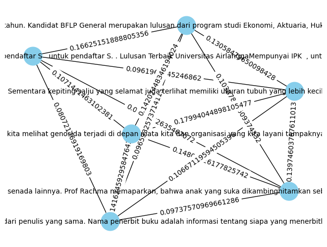

from nltk.tokenize import word_tokenize
from nltk.corpus import stopwords
from sklearn.feature_extraction.text import TfidfVectorizer
from sklearn.feature_extraction.text import CountVectorizer
import warnings
import pandas as pd
import numpy as np
import nltk
import re
import csv
nltk.download('stopwords')
nltk.download('punkt')
warnings.filterwarnings('ignore')
[nltk_data] Downloading package stopwords to /root/nltk_data...
[nltk_data] Unzipping corpora/stopwords.zip.
[nltk_data] Downloading package punkt to /root/nltk_data...
[nltk_data] Unzipping tokenizers/punkt.zip.
df = pd.read_csv('https://raw.githubusercontent.com/pramdf042/PPW/main/Data%20Berita%20Detik.csv')
def cleaning(text):
# Remove non-alphabetic characters (letters, spaces, and punctuation other than periods)
text = re.sub(r'[^a-zA-Z\s.,]', '', text).strip()
return text
df['Cleaning'] = df['Artikel'].apply(cleaning)
df['Cleaning']
0 Peran dan kebiasaan orang tua akan sangat memp...
1 Pendaftaran jenjang Magister atau S di Univers...
2 Ketika meresensi buku atau mengulas buku terda...
3 Craig Mokhiber mengundurkan diri dari jabatann...
4 Sumber Daya Manusia SDM yang unggul menjadi sa...
5 Populasi kepiting salju di Pantai Alaska diket...
6 SMA Unggulan CT ARSA Foundation Sukoharjo, Jaw...
7 Memasuki masa ujian, siswa dan mahasiswa bisa ...
8 Semua makhluk memerlukan respirasi untuk menda...
9 Orang meninggal dunia akibat bencana gagal pan...
10 Seleksi Kompetensi Dasar SKD akan diikuti oleh...
11 Tahukah detikers, salah satu bentuk perpindaha...
12 Kemendikbudristek menemukan penyaluran dana pa...
13 Ilmu geografi adalah ilmu yang mempelajari ten...
14 Istilah lompat sudah tidak asing lagi kita tem...
15 Kampus Merdeka memperpanjang mendaftaran kompe...
16 Pelamar CPNS yang dinyatakan lolos seleksi adm...
17 Apakah detikers pernah mendengar klasifikasi h...
18 Sejak lama tindakan manusia di berbagai belaha...
Name: Cleaning, dtype: object
from nltk.tokenize import sent_tokenize
# Fungsi untuk mengekstrak artikel menjadi kalimat
def extract_sentences(article):
sentences = sent_tokenize(article)
return sentences
# Menerapkan fungsi extract_sentences ke setiap baris dalam kolom 'artikel'
df['Kalimat'] = df['Cleaning'].apply(extract_sentences)
df['Kalimat']
0 [Peran dan kebiasaan orang tua akan sangat mem...
1 [Pendaftaran jenjang Magister atau S di Univer...
2 [Ketika meresensi buku atau mengulas buku terd...
3 [Craig Mokhiber mengundurkan diri dari jabatan...
4 [Sumber Daya Manusia SDM yang unggul menjadi s...
5 [Populasi kepiting salju di Pantai Alaska dike...
6 [SMA Unggulan CT ARSA Foundation Sukoharjo, Ja...
7 [Memasuki masa ujian, siswa dan mahasiswa bisa...
8 [Semua makhluk memerlukan respirasi untuk mend...
9 [Orang meninggal dunia akibat bencana gagal pa...
10 [Seleksi Kompetensi Dasar SKD akan diikuti ole...
11 [Tahukah detikers, salah satu bentuk perpindah...
12 [Kemendikbudristek menemukan penyaluran dana p...
13 [Ilmu geografi adalah ilmu yang mempelajari te...
14 [Istilah lompat sudah tidak asing lagi kita te...
15 [Kampus Merdeka memperpanjang mendaftaran komp...
16 [Pelamar CPNS yang dinyatakan lolos seleksi ad...
17 [Apakah detikers pernah mendengar klasifikasi ...
18 [Sejak lama tindakan manusia di berbagai belah...
Name: Kalimat, dtype: object
df['Kalimat'][0]
['Peran dan kebiasaan orang tua akan sangat mempengaruhi perkembangan anak.',
'Setiap pola asuh yang kita ajarkan harus diperhatikan dengan penuh hatihati.',
'Dalam hal ini, ternyata ada beberapa kebiasaan orang tua yang mungkin tidak disadari, namun bisa berdampak buruk pada potensi anak hingga merusak perkembangannya.',
'Lebih lanjut, simak penjelasan lengkapnya di bawah ini.',
'SCROLL TO CONTINUE WITH CONTENT Orang tua haruslah mengajarkan sesuatu yang baik, karena setiap perbuatan dan perkataan mereka berperan dalam proses belajar dan perkembangan anak.',
'Demikian juga yang disampaikan oleh pakar pendidikan anak usia dini dari Universitas Negeri Surabaya UNESA, Prof Dr Rachma Hasibuan, bahwa setiap ucapan orang tua akan berdampak pada psikologis dan perkembangan karakter anak.',
'Dikutip dari paparan Prof Dr Rachma dari laman UNESA, berikut adalah beberapa kebiasaan orang tua yang bisa merusak perkembangan anak Menakutnakuti anak mungkin sering kita dengar dalam kehidupan sehari hari.',
'Namun, hal tersebut bisa menimbulkan efek ketakutan yang serius bagi anak.',
'Pasalnya, kalimat menakutnakuti berpotensi dalam merusak gambaran tentang realitas.',
'Sehingga, lamakelamaan bisa berpotensi menjadi trauma.',
'Kebiasaan orang tua selanjutnya yaitu membandingbandingkan sang anak dengan saudara atau anak lainnya.',
'Saat hal ini dilakukan para orang tua, berisiko membuat kepercayaan diri anak terhadap usaha dan kemampuannya bisa berkurang atau bahkan hilang.',
'Dibandingbandingkan, akan menyebabkan anak merasa tertekan dan takut untuk melakukan apa pun.',
'Pada akhirnya, hal inilah yang menjadi salah satu alasan menghambatnya perkembangan potensi anak.',
'Saat berhadapan dengan persoalan tertentu, tak jarang orang tua melimpahkan rasa kejengkelan ke anak mereka mengkambinghitamkan.',
'Dalam hal ini, contohnya yaitu dengan mengucapkan kata kata seperti, tuh kan, garagara kamu ulahmu perbuatanmu dan katakata senada lainnya.',
'Prof Rachma memaparkan, bahwa anak yang suka dikambinghitamkan sebagai penyebab suatu persoalan biasanya cenderung diam, bahkan tidak berani berpendapat karena takut disalahkan.',
'Alhasil, bisa jadi ke depannya sang anak tidak berani untuk menceritakan apa pun kepada orang tuanya.',
'Ketika orang tua membiasakan atau sering mengucapkan kalimat yang membuang nilai positif, hal itu akan membuat anak merasa bahwa hal negatif itu merupakan hal yang wajar.',
'Sebagai contoh saat orang tua mengatakan, Nak, berbohong itu tidak masalah lo.',
'Mencela fisik atau psikis merupakan hal yang bisa menyakiti perasaan anak.',
'Jika hal negatif seperti itu sering dilakukan, hal ini akan berdampak pada anak.',
'Mereka akan merasa tidak percaya diri dan membenci dirinya sendiri.',
'Terkadang, hal ini juga yang menyebabkan anak merasa cemas, sehingga bisa pada waktu yang lama bisa menyebabkan gangguan mental.',
'Berikut adalah kebiasaan yang bisa menjadi car dilakukan orang tua dalam mendidik dan mendukung perkembangan anak.',
'Cara menjadi orang tua yang lebih baik adalah dengan mengatakan kalimat positif dan motivasi.',
'Hal ini akan menumbuhkan kepercayaan diri anak, dan membuat mereka semangat dan tidak takut akan kegagalan.',
'Telah disinggung sebelumnya, bahwa perilaku orang tua akan mudah ditiru anak.',
'Dalam tumbuh kembangnya, anak akan menyerap dan meniru hal yang ada di sekitarnya dengan cepat, termasuk kebiasaan orang tuanya.',
'Jadi, sebagai orang tua kita perlu memberikan perilaku baik untuk dijadikan teladan bagi sang anak.',
'Cara ini bisa dijadikan cara untuk membangun hubungan baik dengan anak.',
'Komunikasi ringan,seperti menanyakan keseharian dan pendapat mereka akan membuat anak dan orang tua menjadi lebih dekat.',
'Membiasakan rasa tanggung jawab pada anak bisa dilakukan dengan cara yang sederhana.',
'Contohnya, mengajarkan cara untuk minta maaf ketika habis melakukan kesalahan.',
'Sejumlah kebiasaan orang tua berisiko merusak perkembangan anak, terutama pada psikis mereka.',
'Oleh sebab itu, penting bagi orang tua untuk mengetahui cara mendidik anak yang baik.']
from sklearn.feature_extraction.text import TfidfVectorizer
df['Dokumen'] = df['Kalimat'].apply(lambda sentences: ' '.join(sentences))
tfidf_vectorizer = TfidfVectorizer()
tfidf_matrix = tfidf_vectorizer.fit_transform(df['Dokumen'])
tfidf_df = pd.DataFrame(data=tfidf_matrix.toarray(), columns=tfidf_vectorizer.get_feature_names_out())
tfidf_df
| aac | abad | abdul | abdullah | abolisib | abolisic | abomasum | abrib | absorpsi | ac | ... | yudikatif | yudisial | yudisialc | yuk | yunani | yupa | yurisprudensie | zambiae | zat | zatzat | |
|---|---|---|---|---|---|---|---|---|---|---|---|---|---|---|---|---|---|---|---|---|---|
| 0 | 0.00000 | 0.000000 | 0.000000 | 0.000000 | 0.00000 | 0.000000 | 0.000000 | 0.000000 | 0.000000 | 0.00000 | ... | 0.000000 | 0.00000 | 0.000000 | 0.000000 | 0.000000 | 0.00000 | 0.00000 | 0.000000 | 0.000000 | 0.000000 |
| 1 | 0.04602 | 0.000000 | 0.000000 | 0.000000 | 0.00000 | 0.000000 | 0.000000 | 0.000000 | 0.000000 | 0.04602 | ... | 0.000000 | 0.00000 | 0.000000 | 0.000000 | 0.000000 | 0.00000 | 0.00000 | 0.000000 | 0.000000 | 0.000000 |
| 2 | 0.00000 | 0.000000 | 0.000000 | 0.000000 | 0.00000 | 0.000000 | 0.000000 | 0.000000 | 0.000000 | 0.00000 | ... | 0.000000 | 0.00000 | 0.000000 | 0.000000 | 0.000000 | 0.00000 | 0.00000 | 0.000000 | 0.000000 | 0.000000 |
| 3 | 0.00000 | 0.000000 | 0.000000 | 0.000000 | 0.00000 | 0.000000 | 0.000000 | 0.000000 | 0.000000 | 0.00000 | ... | 0.000000 | 0.00000 | 0.000000 | 0.000000 | 0.073998 | 0.00000 | 0.00000 | 0.000000 | 0.000000 | 0.000000 |
| 4 | 0.00000 | 0.000000 | 0.000000 | 0.000000 | 0.00000 | 0.000000 | 0.000000 | 0.000000 | 0.000000 | 0.00000 | ... | 0.000000 | 0.00000 | 0.000000 | 0.000000 | 0.000000 | 0.00000 | 0.00000 | 0.000000 | 0.000000 | 0.000000 |
| 5 | 0.00000 | 0.000000 | 0.000000 | 0.000000 | 0.00000 | 0.000000 | 0.000000 | 0.000000 | 0.000000 | 0.00000 | ... | 0.000000 | 0.00000 | 0.000000 | 0.000000 | 0.000000 | 0.00000 | 0.00000 | 0.000000 | 0.000000 | 0.000000 |
| 6 | 0.00000 | 0.000000 | 0.000000 | 0.000000 | 0.00000 | 0.000000 | 0.000000 | 0.000000 | 0.000000 | 0.00000 | ... | 0.000000 | 0.00000 | 0.000000 | 0.000000 | 0.000000 | 0.00000 | 0.00000 | 0.000000 | 0.000000 | 0.000000 |
| 7 | 0.00000 | 0.000000 | 0.000000 | 0.000000 | 0.00000 | 0.000000 | 0.000000 | 0.000000 | 0.000000 | 0.00000 | ... | 0.000000 | 0.00000 | 0.000000 | 0.022179 | 0.000000 | 0.00000 | 0.00000 | 0.000000 | 0.000000 | 0.000000 |
| 8 | 0.00000 | 0.000000 | 0.000000 | 0.000000 | 0.00000 | 0.000000 | 0.000000 | 0.000000 | 0.000000 | 0.00000 | ... | 0.000000 | 0.00000 | 0.000000 | 0.015989 | 0.000000 | 0.00000 | 0.00000 | 0.000000 | 0.042034 | 0.000000 |
| 9 | 0.00000 | 0.000000 | 0.000000 | 0.000000 | 0.00000 | 0.000000 | 0.000000 | 0.000000 | 0.000000 | 0.00000 | ... | 0.000000 | 0.00000 | 0.000000 | 0.000000 | 0.000000 | 0.00000 | 0.00000 | 0.000000 | 0.000000 | 0.000000 |
| 10 | 0.00000 | 0.000000 | 0.000000 | 0.000000 | 0.02098 | 0.000000 | 0.000000 | 0.000000 | 0.000000 | 0.00000 | ... | 0.000000 | 0.02098 | 0.000000 | 0.014001 | 0.000000 | 0.02098 | 0.02098 | 0.000000 | 0.000000 | 0.000000 |
| 11 | 0.00000 | 0.000000 | 0.000000 | 0.028251 | 0.00000 | 0.000000 | 0.000000 | 0.000000 | 0.000000 | 0.00000 | ... | 0.000000 | 0.00000 | 0.000000 | 0.000000 | 0.000000 | 0.00000 | 0.00000 | 0.000000 | 0.173477 | 0.024782 |
| 12 | 0.00000 | 0.000000 | 0.000000 | 0.000000 | 0.00000 | 0.000000 | 0.000000 | 0.000000 | 0.000000 | 0.00000 | ... | 0.000000 | 0.00000 | 0.000000 | 0.000000 | 0.000000 | 0.00000 | 0.00000 | 0.000000 | 0.000000 | 0.000000 |
| 13 | 0.00000 | 0.000000 | 0.000000 | 0.000000 | 0.00000 | 0.000000 | 0.000000 | 0.000000 | 0.000000 | 0.00000 | ... | 0.000000 | 0.00000 | 0.000000 | 0.000000 | 0.017236 | 0.00000 | 0.00000 | 0.000000 | 0.000000 | 0.000000 |
| 14 | 0.00000 | 0.000000 | 0.000000 | 0.000000 | 0.00000 | 0.000000 | 0.000000 | 0.000000 | 0.000000 | 0.00000 | ... | 0.000000 | 0.00000 | 0.000000 | 0.012401 | 0.000000 | 0.00000 | 0.00000 | 0.000000 | 0.000000 | 0.000000 |
| 15 | 0.00000 | 0.000000 | 0.000000 | 0.000000 | 0.00000 | 0.000000 | 0.000000 | 0.000000 | 0.000000 | 0.00000 | ... | 0.000000 | 0.00000 | 0.000000 | 0.000000 | 0.000000 | 0.00000 | 0.00000 | 0.000000 | 0.000000 | 0.000000 |
| 16 | 0.00000 | 0.000000 | 0.019654 | 0.000000 | 0.00000 | 0.019654 | 0.000000 | 0.019654 | 0.000000 | 0.00000 | ... | 0.019654 | 0.00000 | 0.019654 | 0.000000 | 0.000000 | 0.00000 | 0.00000 | 0.019654 | 0.000000 | 0.000000 |
| 17 | 0.00000 | 0.000000 | 0.000000 | 0.000000 | 0.00000 | 0.000000 | 0.029639 | 0.000000 | 0.059277 | 0.00000 | ... | 0.000000 | 0.00000 | 0.000000 | 0.019779 | 0.000000 | 0.00000 | 0.00000 | 0.000000 | 0.000000 | 0.026000 |
| 18 | 0.00000 | 0.029789 | 0.000000 | 0.000000 | 0.00000 | 0.000000 | 0.000000 | 0.000000 | 0.000000 | 0.00000 | ... | 0.000000 | 0.00000 | 0.000000 | 0.000000 | 0.000000 | 0.00000 | 0.00000 | 0.000000 | 0.000000 | 0.000000 |
19 rows × 2765 columns
# # Menggabungkan DataFrame asli dengan DataFrame TF-IDF
# result_df = pd.concat([df[['Judul']], tfidf_df], axis=1)
# result_df
# Menyimpan hasilnya ke dalam file CSV baru
output_file_path = 'berita_dalam_kalimat1.csv'
df.to_csv(output_file_path, index=False)
# import library untuk menghitung cosinus similarity
from sklearn.metrics.pairwise import cosine_similarity
from sklearn.feature_extraction.text import TfidfVectorizer
import networkx as nx
import matplotlib.pyplot as plt
from sklearn.metrics.pairwise import cosine_similarity
len_kalimat = df['Dokumen'].shape[0]
temp = []
node = 0
for i in range(len_kalimat):
for j in range(len_kalimat - i):
tfidf_vectorizer = TfidfVectorizer()
tfidf_matrix = tfidf_vectorizer.fit_transform([df['Dokumen'][i], df['Dokumen'][i+j]])
cosine_sim = cosine_similarity(tfidf_matrix[0], tfidf_matrix[1])
similarity_score = cosine_sim[0][0]
temp.append(["node-{} {}&{}".format(node, i, i+j), similarity_score])
node +=1
temp
[['node-0 0&0', 1.0],
['node-1 0&1', 0.13099017463160711],
['node-2 0&2', 0.1570085587312921],
['node-3 0&3', 0.23854583708013494],
['node-4 0&4', 0.17862571098969987],
['node-5 0&5', 0.22413090871520894],
['node-6 0&6', 0.09842773520070904],
['node-7 0&7', 0.23382082098094242],
['node-8 0&8', 0.18679818855748026],
['node-9 0&9', 0.24313052676709773],
['node-10 0&10', 0.26836866749544896],
['node-11 0&11', 0.13581903974894674],
['node-12 0&12', 0.1418207400706338],
['node-13 0&13', 0.15932013867875006],
['node-14 0&14', 0.19753946374420403],
['node-15 0&15', 0.05175533319914437],
['node-16 0&16', 0.27719296802242416],
['node-17 0&17', 0.18517164619780765],
['node-18 0&18', 0.20862987801368116],
['node-19 1&1', 0.9999999999999998],
['node-20 1&2', 0.13231654840857834],
['node-21 1&3', 0.16659832967742422],
['node-22 1&4', 0.22892834453687916],
['node-23 1&5', 0.15453580374093798],
['node-24 1&6', 0.11462861662797663],
['node-25 1&7', 0.18700262159000722],
['node-26 1&8', 0.14661713507913582],
['node-27 1&9', 0.20872321794864596],
['node-28 1&10', 0.24486160649076633],
['node-29 1&11', 0.08869662227430768],
['node-30 1&12', 0.09640149075698044],
['node-31 1&13', 0.13441188675087823],
['node-32 1&14', 0.14563090918852245],
['node-33 1&15', 0.07703305274995087],
['node-34 1&16', 0.23185346036900872],
['node-35 1&17', 0.12170888442494995],
['node-36 1&18', 0.16382535358007608],
['node-37 2&2', 1.0000000000000002],
['node-38 2&3', 0.2561388781818956],
['node-39 2&4', 0.15745450760486804],
['node-40 2&5', 0.1769726473717892],
['node-41 2&6', 0.08656508156030758],
['node-42 2&7', 0.15903383702351093],
['node-43 2&8', 0.223637663128142],
['node-44 2&9', 0.17472750005245521],
['node-45 2&10', 0.22687469959103515],
['node-46 2&11', 0.17692800882082377],
['node-47 2&12', 0.09836154878345042],
['node-48 2&13', 0.203489455672553],
['node-49 2&14', 0.20920067275593401],
['node-50 2&15', 0.054204360622603934],
['node-51 2&16', 0.2801531562346314],
['node-52 2&17', 0.22720208701736164],
['node-53 2&18', 0.16011397875579184],
['node-54 3&3', 1.0000000000000004],
['node-55 3&4', 0.2388993804431402],
['node-56 3&5', 0.3086167494276626],
['node-57 3&6', 0.1716172754990606],
['node-58 3&7', 0.1958580145224198],
['node-59 3&8', 0.2576897623736756],
['node-60 3&9', 0.2960347758515469],
['node-61 3&10', 0.3673188999182527],
['node-62 3&11', 0.2142893768283527],
['node-63 3&12', 0.20725584243842118],
['node-64 3&13', 0.25148362694889637],
['node-65 3&14', 0.27007903106939873],
['node-66 3&15', 0.09139443012159015],
['node-67 3&16', 0.38609187651957205],
['node-68 3&17', 0.27004599177001354],
['node-69 3&18', 0.2537670229114],
['node-70 4&4', 0.9999999999999999],
['node-71 4&5', 0.22604567336801912],
['node-72 4&6', 0.15879649374258475],
['node-73 4&7', 0.20798216658941351],
['node-74 4&8', 0.19564762088286633],
['node-75 4&9', 0.2597291264344066],
['node-76 4&10', 0.31054074291810735],
['node-77 4&11', 0.14343810937291782],
['node-78 4&12', 0.14651482229027551],
['node-79 4&13', 0.18388557438616587],
['node-80 4&14', 0.1924359975393351],
['node-81 4&15', 0.08530168660003913],
['node-82 4&16', 0.3154985390881502],
['node-83 4&17', 0.17669145418263046],
['node-84 4&18', 0.22912016875285002],
['node-85 5&5', 1.0000000000000002],
['node-86 5&6', 0.16265966951055258],
['node-87 5&7', 0.21066855566494072],
['node-88 5&8', 0.21366952008375376],
['node-89 5&9', 0.3652952188234417],
['node-90 5&10', 0.2851507848007237],
['node-91 5&11', 0.18966244372334326],
['node-92 5&12', 0.14936562644885276],
['node-93 5&13', 0.21785505256885995],
['node-94 5&14', 0.22307798493686012],
['node-95 5&15', 0.09073811130637553],
['node-96 5&16', 0.2766609821149289],
['node-97 5&17', 0.2558254137289689],
['node-98 5&18', 0.30921859679936603],
['node-99 6&6', 0.9999999999999999],
['node-100 6&7', 0.10076271093137004],
['node-101 6&8', 0.11202079032829315],
['node-102 6&9', 0.18121234983325255],
['node-103 6&10', 0.15709548512383606],
['node-104 6&11', 0.09165465062958805],
['node-105 6&12', 0.1446937926530862],
['node-106 6&13', 0.107252178121019],
['node-107 6&14', 0.13064584081360836],
['node-108 6&15', 0.0725902812050585],
['node-109 6&16', 0.1519741540352101],
['node-110 6&17', 0.1240150993528272],
['node-111 6&18', 0.1442261800659827],
['node-112 7&7', 1.0],
['node-113 7&8', 0.17403758312987094],
['node-114 7&9', 0.23524752931012594],
['node-115 7&10', 0.2370572009008487],
['node-116 7&11', 0.13712840910945603],
['node-117 7&12', 0.13710899259792012],
['node-118 7&13', 0.1557164693859388],
['node-119 7&14', 0.17142688769903805],
['node-120 7&15', 0.0728087100279691],
['node-121 7&16', 0.2347557945051718],
['node-122 7&17', 0.16889069875875276],
['node-123 7&18', 0.1715852973471963],
['node-124 8&8', 1.000000000000002],
['node-125 8&9', 0.18932621399290814],
['node-126 8&10', 0.2698864206722472],
['node-127 8&11', 0.2223284079266139],
['node-128 8&12', 0.12163259690925732],
['node-129 8&13', 0.2031656167877881],
['node-130 8&14', 0.20745348751189788],
['node-131 8&15', 0.060760399204585654],
['node-132 8&16', 0.26533606485444566],
['node-133 8&17', 0.25288156224376884],
['node-134 8&18', 0.16341770881166992],
['node-135 9&9', 0.9999999999999999],
['node-136 9&10', 0.3246823402883569],
['node-137 9&11', 0.15849212609073537],
['node-138 9&12', 0.18200889776000756],
['node-139 9&13', 0.21118209108983527],
['node-140 9&14', 0.2538521814509187],
['node-141 9&15', 0.08637527718975466],
['node-142 9&16', 0.30650074285522244],
['node-143 9&17', 0.2231416599593032],
['node-144 9&18', 0.304604538226519],
['node-145 10&10', 0.9999999999999999],
['node-146 10&11', 0.1963090155503711],
['node-147 10&12', 0.18518566102173706],
['node-148 10&13', 0.2590785697934703],
['node-149 10&14', 0.2814405688652298],
['node-150 10&15', 0.0789590660873661],
['node-151 10&16', 0.724996673611737],
['node-152 10&17', 0.28260076147206387],
['node-153 10&18', 0.27679236771757953],
['node-154 11&11', 1.0000000000000002],
['node-155 11&12', 0.10445904945884969],
['node-156 11&13', 0.15260726957950538],
['node-157 11&14', 0.19272754593977393],
['node-158 11&15', 0.06440251066959765],
['node-159 11&16', 0.21298341200620943],
['node-160 11&17', 0.18933534823633957],
['node-161 11&18', 0.13582598938020826],
['node-162 12&12', 1.0000000000000002],
['node-163 12&13', 0.11301219557694415],
['node-164 12&14', 0.13711291274593845],
['node-165 12&15', 0.07180676687038408],
['node-166 12&16', 0.18258102939670023],
['node-167 12&17', 0.14423536506538623],
['node-168 12&18', 0.1419879629644869],
['node-169 13&13', 1.0],
['node-170 13&14', 0.2164058923596879],
['node-171 13&15', 0.07648145970195593],
['node-172 13&16', 0.2734396069508209],
['node-173 13&17', 0.1855228673554643],
['node-174 13&18', 0.1559557320266384],
['node-175 14&14', 1.0000000000000002],
['node-176 14&15', 0.0641806097379068],
['node-177 14&16', 0.2872122905659376],
['node-178 14&17', 0.22493222950012234],
['node-179 14&18', 0.21257013426805998],
['node-180 15&15', 1.0000000000000004],
['node-181 15&16', 0.07856742212841222],
['node-182 15&17', 0.056397570340930646],
['node-183 15&18', 0.05549797955109225],
['node-184 16&16', 1.0000000000000002],
['node-185 16&17', 0.26196052263175584],
['node-186 16&18', 0.2615451711508272],
['node-187 17&17', 1.0000000000000002],
['node-188 17&18', 0.20948868161008963],
['node-189 18&18', 1.0]]
sentences = [df['Dokumen'][0], df['Dokumen'][1], df['Dokumen'][2],df['Dokumen'][3],df['Dokumen'][4],df['Dokumen'][5]]
tfidf_matrix = tfidf_vectorizer.fit_transform(sentences).toarray()
G = nx.Graph()
for i in range(len(sentences)):
for j in range(i + 1, len(sentences)):
similarity_score = cosine_similarity([tfidf_matrix[i]], [tfidf_matrix[j]])[0][0]
print(similarity_score)
if similarity_score > 0.02: # Sesuaikan threshold sesuai kebutuhan
G.add_edge(sentences[i], sentences[j], weight=similarity_score)
0.0709972635467072
0.09737570969661286
0.14805026177825742
0.10387815609374332
0.13974603767611013
0.08072176919169803
0.1071441463102381
0.16625151888805356
0.0961967245246862
0.14162459295847643
0.0965932573714113
0.10667119594505396
0.14207448346194024
0.17994044898105477
0.13058479650098428
# Menggambar grafik
pos = nx.spring_layout(G)
edge_labels = {(n1, n2): d['weight'] for n1, n2, d in G.edges(data=True)}
nx.draw(G, pos, with_labels=True, node_size=700, node_color='skyblue', font_size=10)
nx.draw_networkx_edge_labels(G, pos, edge_labels=edge_labels)
plt.show()

closeness_centrality = nx.closeness_centrality(G, distance='weight')
sorted_closeness_centrality = {node: value for node, value in sorted(closeness_centrality.items(), key=lambda item: item[1], reverse=True)}
# Membuat DataFrame dari hasil yang diurutkan
df = pd.DataFrame(list(sorted_closeness_centrality.items()), columns=['Node', 'Closeness Centrality'])
# Menampilkan DataFrame
df
| Node | Closeness Centrality | |
|---|---|---|
| 0 | Pendaftaran jenjang Magister atau S di Univers... | 9.591196 |
| 1 | Ketika meresensi buku atau mengulas buku terda... | 9.560476 |
| 2 | Peran dan kebiasaan orang tua akan sangat memp... | 8.927815 |
| 3 | Sumber Daya Manusia SDM yang unggul menjadi sa... | 7.820049 |
| 4 | Populasi kepiting salju di Pantai Alaska diket... | 7.655336 |
| 5 | Craig Mokhiber mengundurkan diri dari jabatann... | 6.955709 |
closeness_centrality
{'Peran dan kebiasaan orang tua akan sangat mempengaruhi perkembangan anak. Setiap pola asuh yang kita ajarkan harus diperhatikan dengan penuh hatihati. Dalam hal ini, ternyata ada beberapa kebiasaan orang tua yang mungkin tidak disadari, namun bisa berdampak buruk pada potensi anak hingga merusak perkembangannya. Lebih lanjut, simak penjelasan lengkapnya di bawah ini. SCROLL TO CONTINUE WITH CONTENT Orang tua haruslah mengajarkan sesuatu yang baik, karena setiap perbuatan dan perkataan mereka berperan dalam proses belajar dan perkembangan anak. Demikian juga yang disampaikan oleh pakar pendidikan anak usia dini dari Universitas Negeri Surabaya UNESA, Prof Dr Rachma Hasibuan, bahwa setiap ucapan orang tua akan berdampak pada psikologis dan perkembangan karakter anak. Dikutip dari paparan Prof Dr Rachma dari laman UNESA, berikut adalah beberapa kebiasaan orang tua yang bisa merusak perkembangan anak Menakutnakuti anak mungkin sering kita dengar dalam kehidupan sehari hari. Namun, hal tersebut bisa menimbulkan efek ketakutan yang serius bagi anak. Pasalnya, kalimat menakutnakuti berpotensi dalam merusak gambaran tentang realitas. Sehingga, lamakelamaan bisa berpotensi menjadi trauma. Kebiasaan orang tua selanjutnya yaitu membandingbandingkan sang anak dengan saudara atau anak lainnya. Saat hal ini dilakukan para orang tua, berisiko membuat kepercayaan diri anak terhadap usaha dan kemampuannya bisa berkurang atau bahkan hilang. Dibandingbandingkan, akan menyebabkan anak merasa tertekan dan takut untuk melakukan apa pun. Pada akhirnya, hal inilah yang menjadi salah satu alasan menghambatnya perkembangan potensi anak. Saat berhadapan dengan persoalan tertentu, tak jarang orang tua melimpahkan rasa kejengkelan ke anak mereka mengkambinghitamkan. Dalam hal ini, contohnya yaitu dengan mengucapkan kata kata seperti, tuh kan, garagara kamu ulahmu perbuatanmu dan katakata senada lainnya. Prof Rachma memaparkan, bahwa anak yang suka dikambinghitamkan sebagai penyebab suatu persoalan biasanya cenderung diam, bahkan tidak berani berpendapat karena takut disalahkan. Alhasil, bisa jadi ke depannya sang anak tidak berani untuk menceritakan apa pun kepada orang tuanya. Ketika orang tua membiasakan atau sering mengucapkan kalimat yang membuang nilai positif, hal itu akan membuat anak merasa bahwa hal negatif itu merupakan hal yang wajar. Sebagai contoh saat orang tua mengatakan, Nak, berbohong itu tidak masalah lo. Mencela fisik atau psikis merupakan hal yang bisa menyakiti perasaan anak. Jika hal negatif seperti itu sering dilakukan, hal ini akan berdampak pada anak. Mereka akan merasa tidak percaya diri dan membenci dirinya sendiri. Terkadang, hal ini juga yang menyebabkan anak merasa cemas, sehingga bisa pada waktu yang lama bisa menyebabkan gangguan mental. Berikut adalah kebiasaan yang bisa menjadi car dilakukan orang tua dalam mendidik dan mendukung perkembangan anak. Cara menjadi orang tua yang lebih baik adalah dengan mengatakan kalimat positif dan motivasi. Hal ini akan menumbuhkan kepercayaan diri anak, dan membuat mereka semangat dan tidak takut akan kegagalan. Telah disinggung sebelumnya, bahwa perilaku orang tua akan mudah ditiru anak. Dalam tumbuh kembangnya, anak akan menyerap dan meniru hal yang ada di sekitarnya dengan cepat, termasuk kebiasaan orang tuanya. Jadi, sebagai orang tua kita perlu memberikan perilaku baik untuk dijadikan teladan bagi sang anak. Cara ini bisa dijadikan cara untuk membangun hubungan baik dengan anak. Komunikasi ringan,seperti menanyakan keseharian dan pendapat mereka akan membuat anak dan orang tua menjadi lebih dekat. Membiasakan rasa tanggung jawab pada anak bisa dilakukan dengan cara yang sederhana. Contohnya, mengajarkan cara untuk minta maaf ketika habis melakukan kesalahan. Sejumlah kebiasaan orang tua berisiko merusak perkembangan anak, terutama pada psikis mereka. Oleh sebab itu, penting bagi orang tua untuk mengetahui cara mendidik anak yang baik.': 8.927815293768745,
'Pendaftaran jenjang Magister atau S di Universitas Airlangga Unair kembali dibuka. Pendaftaran Gelombang III Semester Genap ini dibuka sampai November pukul . WIB. Pendaftaran S Unair dibuka hingga Gelombang pada masingmasing semester ganjil dan genap. Adapun peminat bisa memilih dua jalur tes, yaitu jalur tes tertulis dan non tulis. Jalur non tulis mencakup TPA dan TOEFL, Lulusan Terbaik Unair, dan Portofolio. Biaya pendaftaran Magister sebesar Rp ribu dan tidak dapat ditarik kembali. Tertarik mendaftar program S Unair Cek informasi lengkapnya melansir dari situs resmi Unair berikut ini. SCROLL TO CONTINUE WITH CONTENT Ujian Program Pascasarjana dan Profesi diadakan secara daring. Adapun Tes Potensi Akademik TPA meliputi Tes Kemampuan Verbal, Tes Kemampuan Numerik dan Kemampuan Penalaran, Tes Bahasa Inggris, dan Wawancara. Kemudian untuk seleksi Jalur Non Tes Tulis hanya Tes Wawancara. Ragam Jalur Non Tulis beserta syaratnya adalah . TPA dan TOEFLTPA OTO BappenasTPKA AAC UNAIR untuk pendaftar S untuk pendaftar S dan TOEFLSejenisnya untuk pendaftar S untuk pendaftar S. . Lulusan Terbaik Universitas AirlanggaMempunyai IPK , untuk pendaftar S , untuk pendaftar S lulusan tahun terakhir . PortofolioPimpinan dalam perusahaan instansi Kepala Bagian, Kepala Cabang, Manajer, Direktur, Komisaris, Wakil Dekan, Dekan, Rektor dan linier dengan program studi yang dipilihMempunyai penghargaan atas kontribusinya pada pembangunan pemberdayaan masyarakatPraktisiStaf Ahli Konsultan dimana kepakarannya sesuai dengan program studi yang dipilihMempunyai karya tulis ilmiah yang diterbitkan dalam Jurnal nasional minimal terakreditasi Sinta atau diterbitkan pada Jurnal Internasional bereputasi dalam tahun terakhir Pendaftaran Oktober November Perbaikan Dokumen Pendaftaran Oktober November Verifikasi Dokumen Pendaftaran Oktober November Pembayaran Biaya Seleksi Oktober November Ujian TPA, Bahasa Inggris dan Wawancara November Pengumuman Hasil Seleksi November Informasi lebih lengkap mengenai Pendaftaran S Unair Gelombang III Tahun dapat kamu cek melalui httpsppmb.unair.ac.id. Jangan sampai terlewat, ya': 9.591195942710007,
'Ketika meresensi buku atau mengulas buku terdapat beberapa hal yang harus dituliskan, termasuk identitas buku yang terletak pada bagian pendahuluan resensi. Dalam artikel ini, kita akan membahas mulai dari pengertian, unsur, fungsi dan contoh identitas buku. Untuk itu, simak artikel di bawah ini agar lebih paham. Identitas buku merupakan datadata atau informasi gambaran buku secara khusus. Identitas buku mencakup judul buku, nama penulis, tahun terbit dan cetak, ketebalan buku, nomor edisi buku, penerbit, hingga ukuran buku. SCROLL TO CONTINUE WITH CONTENT Informasi identitas buku ini biasanya terdapat pada halaman hak cipta buku, di sampul buku, dan di katalog pustaka. Informasi identitas buku sangat penting untuk pembaca atau pustakawan untuk mengidentifikasi dan menggunakan buku secara efisien. Dikutip dari buku Menilai Karya Melalui Resensi oleh Diah Safitri, identitas buku memiliki beberapa fungsi dan tujuan, yaitu Unsurunsur yang biasanya terdapat dalam identitas buku yaitu sebagai berikut. Judul buku adalah elemen utama yang mencerminkan esensi buku. Dalam identitas buku, judul ini menjadi fokus utama yang memberikan gambaran tentang isi buku. Judul yang menarik dapat memikat pembaca potensial. Nama penulis atau pengarang buku adalah bagian penting dalam identitas. Ini membantu pembaca mengidentifikasi siapa yang menciptakan karya tersebut dan memungkinkan pembaca untuk mencari karyakarya lain dari penulis yang sama. Nama penerbit buku adalah informasi tentang siapa yang menerbitkan dan mendistribusikan buku. Ini juga bisa menjadi faktor pertimbangan bagi pembaca yang mencari buku dari penerbit tertentu. Tahun terbit memberikan indikasi kapan buku tersebut pertama kali diterbitkan dan apakah buku tersebut adalah edisi terbaru atau edisi lama. Pembaca seringkali ingin memperoleh informasi yang paling mutakhir, terutama dalam konteks buku referensi dan ilmiah. Ketebalan buku, atau jumlah halaman, memberikan pandangan tentang seberapa panjang atau pendek isi buku. Ini membantu pembaca memperkirakan seberapa tebal buku itu dan juga bisa mempengaruhi harga. Hal ini membantu pembaca memutuskan apakah buku tersebut sesuai dengan kebutuhan dan waktu yang tersedia. Ukuran buku mencerminkan dimensi fisik buku, seperti ukuran A, A, atau lainnya. Ini mempengaruhi tata letak, tampilan buku, dan kenyamanan membaca dan menggunakan buku tersebut. Nomor ISBN adalah digit angka kode unik yang terintegrasi dengan komputer yang digunakan secara global untuk mengidentifikasi buku. Setiap buku memiliki ISBN yang berbeda dan digunakan untuk melacak informasi buku. Judul buku Laskar PelangiPenulis Andrea HirataTahun terbit Penerbit Bentang PustakaJumlah halaman hlmUkuran buku cm x , cmISBN Nah, itulah penjelasan mengenai identitas buku, mulai dari pengertian, unsur, fungsi, dan contoh yang berhasil kami rangkum melalui berbagai sumber. Semoga bermanfaat': 9.56047576644394,
'Craig Mokhiber mengundurkan diri dari jabatannya sebagai Direktur Kantor Komisaris Tinggi PBB untuk Hak Asasi Manusia di New York, Amerika Serikat. Pada surat pengunduran dirinya yang dilihat detikEdu dalam DailyMail pada Rabu , ia memprotes bahwa PBB gagal dalam mencegah apa yang dikategorikan sebagai genosida di Gaza, Palestina oleh Israel. Kedua negara ini diketahui memiliki sejarah perseteruan yang panjang. Melansir dari detikNews, konflik bermula dari warga Arab Yahudi yang menempati wilayah Palestina. Meski sudah ditetapkan berdasarkan hasil keputusan PBB, warga Arab Yahudi masih tidak terima. Konflik memuncak saat pendeklarasian negara Israel pada Mei . Warga Palestina menolak dan pecahlah perang bernama AlNakhba atau yang diartikan sebagai malapetaka. SCROLL TO CONTINUE WITH CONTENT Perseteruan ini terus berlanjut yang menewaskan ribuan warga sipil. Barubaru ini, konflik kembali memuncak saat Hamas, kelompok pejuang kemerdekaan Palestina, menyerang Israel pada Oktober lalu. Israel membalasnya dengan serangan hingga saat ini. Menurut data AP News pada Senin , angka kematian mencapai lebih dari . orang. Ledakan bom yang dikirimkan Israel merusak pemukiman, sekolah, hingga rumah sakit, termasuk Rumah Sakit Indonesia. Atas peristiwa ini, Mokhiber kembali menegaskan alasan pengunduran dirinya. Ia menyatakan jika konflik saat ini sudah termasuk sebagai text book genocide atau genosida yang didefinisikan sebagaimana di dalam buku. Sekali lagi kita melihat genosida terjadi di depan mata kita dan organisasi yang kita layani tampaknya tidak berdaya untuk menghentikannya, tulis Mokhiber. Pengacara HAM itu juga menyinggung genosida yang sebelumnya terjadi pada Tutsi di Rwanda, Muslim di Bosnia, Yazidi di Kurdistan Irak dan Rohingya di Myanmar. Menurutnya, PBB gagal lagi dalam mencegah peristiwa serupa terjadi. Pembantaian besarbesaran terhadap rakyat Palestina saat ini, yang berakar pada ideologi pemukim kolonial etnonasionalis, merupakan kelanjutan dari penganiayaan dan pembersihan sistematis yang telah berlangsung selama beberapa dekade, tulisnya. Ia pun menuding Amerika, Inggris, dan sebagian besar negara Eropa karena menolak untuk memenuhi kewajiban perjanjian mereka berdasarkan Konvensi Jenewa. Melansir dari laman resmi PBB, Konvensi Jenewa merupakan perjanjian yang mengatur tentang perlindungan terhadap korban dari konflik bersenjata. Menurut situs Museum Memorial Holocaust Amerika Serikat, genosida adalah tindakan yang dilakukan untuk menghancurkan, seluruhnya atau sebagian, suatu kelompok bangsa, etnis, ras atau agama. Genosida merupakan penghabisan orangorang dalam suatu kelompok tertentu. Genosida berasal dari bahasa Yunani dan Latin. Geno, dari bahasa Yunani yang berarti ras atau suku, dengan kata cide sida, berasal dari bahasa Latin yang berarti pembantaian. Tindakan genosida dapat meliputi Ada tiga kasus yang tercatat oleh ketentuan konvensi PBB tahun sebagai kejahatan genosida. Melansir dari BBC, ketiga peristiwa tersebut adalah sebagai berikut.': 6.955709472040091,
'Sumber Daya Manusia SDM yang unggul menjadi salah satu fokus PT Bank Rakyat Indonesia Persero Tbk atau BRI untuk menciptakan pertumbuhan yang berkelanjutan. Wujud pengembangan talenta ini salah satunya terlihat dari upaya perseroan menjaring SDM unggul di Indonesia melalui program BRILiaN Future Leader Program BFLP. Terkait hal tersebut, Direktur Human Capital BRI Agus Winardono mengungkapkan bahwa program Management Trainee kembali dibuka guna menjaring dan mempersiapkan talentatalenta terbaik bangsa untuk berkarya dan memberi makna Indonesia bersama BRI Group. BRI akan menyeleksi pelamar maupun kandidat berkualitas untuk berkarya dan mengembangkan potensi terbaik di BRI Group. Para calon terpilih berkesempatan untuk terus bertumbuh dan belajar demi memberikan kontribusi terbaik untuk memberi makna Indonesia, katanya, dikutip Rabu . SCROLL TO CONTINUE WITH CONTENT Rangkaian program rekrutmen BFLP BRI Group dimulai dengan dilakukannya BRI Campus Roadshow di kota besar Yogyakarta, Surabaya, Malang, dan Bandung bekerja sama dengan Perguruan Tinggi di Indonesia, yaitu Universitas Gadjah Mada, Institut Teknologi Sepuluh Nopember, Universitas Brawijaya, dan Universitas Padjadjaran. Kegiatan BRI Campus Roadshow tersebut diisi dengan knowledge sharing dari para narasumber berpengalaman di BRI yang juga merupakan alumni dari masingmasing Perguruan Tinggi. Selain itu, dalam kegiatan tersebut juga diselenggarakan Campus Hiring BFLP secara langsung. Pendaftaran BFLP BRI Group Batch dibuka hingga November untuk posisi BFLP General dan BFLP IT. Kualifikasi umum yang harus dipenuhi dalam lowongan kerja BRI ini, yakni, lulusan S dengan batas usia tahun dan lulusan S dengan batas usia tahun. Kandidat BFLP General merupakan lulusan dari program studi Ekonomi, Aktuaria, Hukum, Psikologi, Teknik, Teknologi Pertanian, Pertanian, Perikanan, Agribisnis, Peternakan, Kehutanan, Hubungan Internasional, Ilmu Komunikasi, Administrasi Fiskal, Administrasi Niaga, Administrasi Negara, Administrasi Bisnis, Administrasi Publik, Matematika, Statistika, dan Fisika. Sementara itu, kandidat BFLP IT merupakan lulusan dari program studi Teknik, Sistem Informasi, Ilmu Komputer, Matematika, Statistika. BRI berhak menetapkan dan memutuskan kandidatkandidat yang memenuhi kualifikasi pada setiap tahapan seleksi. Hanya kandidat dengan kualifikasi terbaik yang akan dipanggil untuk mengikuti tahapan seleksi. Keputusan tersebut bersifat mutlak serta tidak dapat diganggu gugat. BRI juga mengingatkan kepada masyarakat dan para pelamar pekerjaan agar berhatihati dan waspada terhadap berbagai bentuk penipuan. Agus menekankan bahwa program rekrutmen yang dilakukan BRI tidak memungut biaya mulai dari awal hingga akhir program alias gratis. Informasi selengkapnya dapat diakses di httpserecruitment.bri.co.id, instagram lifeatBRI, dan LinkedIn PT Bank Rakyat Indonesia Persero, Tbk. Komitmen BRI dalam mengembangkan SDM melalui beragam inisiatif ini pun telah diakui oleh berbagai pihak. Terbaru, bank dengan jaringan terluas di Indonesia ini meraih penghargaan Best Company to Work for in Asia . Penghargaan ini menjadi kali kedua bagi Perseroan mendapatkan apresiasi terhadap komitmennya dalam mengembangkan para karyawannya. Selain itu, BRI juga mendapatkan predikat sebagai Most Caring Companies dalam ajang WE CARE. Kami terus menempuh strategi untuk mencapai aspirasi BRI sebagai The Most Valuable Banking Group in Southeast Asia Champion of Financial Inclusion di mana salah satu enablernya adalah Home to The Best Talent, pungkasnya.': 7.820048640214323,
'Populasi kepiting salju di Pantai Alaska diketahui menurun hingga miliar. Penyebabnya adalah suhu air laut yang meningkat akibat serangan gelombang panas. Kepiting salju Chionoecetes opilio merupakan spesies perairan dingin yang banyak ditemukan di daerah dengan suhu air di bawah C dan sedikit populasi bisa hidup sampai di suhu C. Di perairan dingin Laut Bering, dekat Alaska, kepiting salju biasanya hidup dengan suhu di dasar laut di bawah , C. Sebelumnya, peneliti menemukan bahwa populasi kepiting salju yang pernah dilepas di perairan Alaska pada tahun hingga , mengalami penurunan signifikan. Total sekitar miliar kepiting salju atau sekitar persen populasi diperkirakan telah lenyap. SCROLL TO CONTINUE WITH CONTENT Fenomena yang belum pernah terjadi sebelumnya mengakibatkan gagal panen yang serius terhadap kepiting salju pada tahun dan . Melansir laman Smithsonian Magazine, sebuah penelitian mengungkapkan bahwa salah satu faktor utama penyebab penurunan populasi kepiting salju di Laut Bering adalah karena gelombang panas laut yang terjadi pada tahun dan . Air laut yang lebih hangat kemungkinan besar akan merusak metabolisme kepiting dan meningkatkan kebutuhan kalori mereka. Gelombang panas ini juga akan memengaruhi populasi kepiting salju yang harus mencari lebih banyak makanan untuk bertahan hidup dengan meningkatnya suhu air. Dari tahun hingga , kalori yang mereka butuhkan meningkat empat kali lipat, kata Cody Szuwalski, rekan penulis studi dan ahli biologi di National Oceanic and Atmospheric Administration NOAA. Kami mungkin tidak akan melihat banyak dari mereka lagi di dekat Alaska, tambahnya. Pakar mengatakan bahwa selama periode gelombang panas, kepiting salju harus bersaing dengan populasi kepiting lainnya yang lebih besar pada tahun untuk mendapatkan makanan. Karena ketersediaan makanan yang terbatas, banyak kepiting salju mengalami kelaparan dan kematian. Sementara kepiting salju yang selamat juga terlihat memiliki ukuran tubuh yang lebih kecil. Faktanya, gelombang panas ini tidak hanya memengaruhi kepiting salju, tetapi juga mengganggu ekosistem laut secara keseluruhan. Spesies lain, seperti ikan cod Pasifik, memanfaatkan suhu air yang lebih hangat untuk memasuki habitat kepiting dan memakan kepiting ini. Selain kepiting, populasi ikan salmon, burung laut, dan anjing laut juga terpengaruh. Penulis studi dan ahli biologi penelitian perikanan di Alaska Fisheries Science Center NOAA, Kerim Aydin, mengatakan gelombang panas yang datang bisa menciptakan kelaparan dalam jumlah besar. Spesies lain mungkin telah pindah untuk memanfaatkannya, dan kemudian ketika gelombang panas berlalu, segalanya mungkin akan kembali normalmeskipun kepiting masih harus menempuh jalan panjang untuk melewatinya bahkan dalam waktu normal, ungkapnya dikutip dari CNN. Beberapa spesies, seperti ikan musang dan pollock walleye, mampu beradaptasi lebih cepat dengan suhu air yang lebih hangat. Namun, peneliti juga mengatakan bahwa ini juga akan menjadi fenomena baru di mana keseluruhan spesies yang hidup di Laut Bering kemungkinan akan terlihat sangat berbeda dibandingkan saat ini. Dikutip dari The Guardian, kepiting salju selama ini telah memainkan peran penting dalam industri perikanan komersial di alaskan Alaska yang bernilai lebih dari juta atau berkisar Rp triliun lebih. Namun, karena populasi kepiting salju menurun, penghasilan dari bisnis ini juga menurun, dan orangorang yang mencari nafkah dari menangkap kepiting salju mengalami kesulitan finansial. Tampaknya ini merupakan salah satu kerugian terbesar yang dilaporkan dari makrofauna laut yang bergerak akibat gelombang panas laut secara global, kata tim peneliti dari NOAA. Ke depannya, studi akan melaporkan lebih banyak analisa di mana ilmuwan perikanan harus mempertimbangkan efek pemanasan global ketika mereka membuat rencana konservasi. Selain itu, pengetahuan akan model dan sistem manajemen saat ini juga akan dilihat dari pengaruh perubahan iklim yang cepat.': 7.655335910365338}